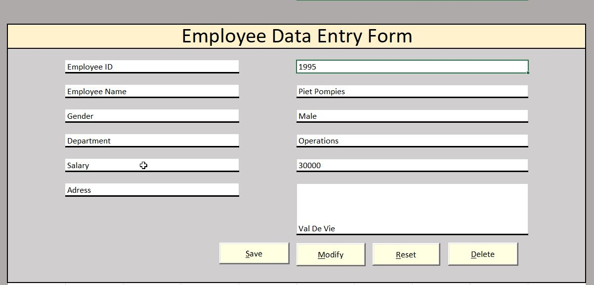
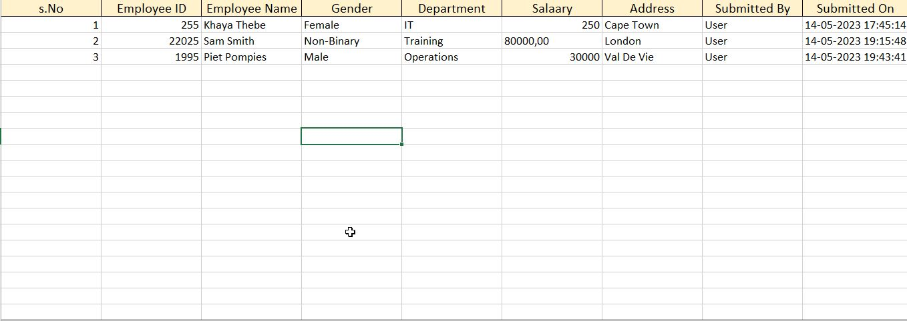

This is an example of a complex job that I have created to date. The data is extracted from 3 different data bases.
Once the connection has been established, the data goes throught a series of validations and then the tranformation process starts.
SMTP email notifications are also being sent out when the validation is successfull. The validated data is then loaded to the final database using insert
statements and update statements where neccesary. Once the main job is complete the connection is closed.


This is another example for a job that I designed that writes data from one database to the destination database using an API that uses a
specific write method. The data also goes through some tranformations before being loaded to the API.

I created this dynamic dashboard using \raw data from an actual survey that was done
by data professionals. I prepared and transformed the data using power query, then loaded it
on PowerBI to finalise the visualzations.


I managed to design the form using Excel.The input data from the form is transferred to the database sheet
using VBA code. The data in the database sheet can be edited with the help of Macros.

This is a demostration of how I create my datasets using a stored procedure. These datasets will be used to create SSRS resports and PowerBi dashboards.